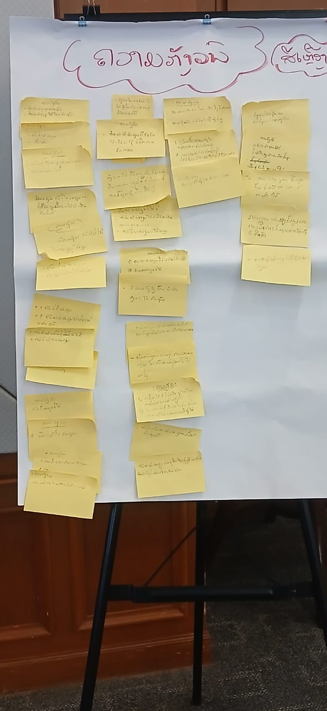

📊 ບົດລວບລວມຄຳຄິດເຫັນຈາກຜູ້ເຂົ້າຮ່ວມ
ບົດສະຫຼຸບຂໍ້ມູນການສຳຫຼວດກ່ອນການຝຶກອົບຮົມ (Workshop Feedback) ໂດຍແບ່ງອອກເປັນ 2 ພາກສ່ວນຫຼັກຄື: ສິ່ງທີ່ຄາດຫວັງຢາກໄດ້ຮັບ ແລະ ສິ່ງທີ່ເປັນຄວາມກັງວົນໃຈ.
🟢 ຄວາມຄາດຫວັງທັງໝົດ
ຈຳນວນຄຳຄິດເຫັນ (ສະຕິກເກີສີຂຽວ)
🟡 ຄວາມກັງວົນທັງໝົດ
ຈຳນວນຄຳຄິດເຫັນ (ສະຕິກເກີສີເຫຼືອງ)
ພາບລວມຄວາມຄິດເຫັນ
ຈາກການເກັບກຳຂໍ້ມູນ, ເຫັນໄດ້ວ່າຜູ້ເຂົ້າຮ່ວມມີສັດສ່ວນຂອງ ຄວາມກັງວົນ (52%) ຫຼາຍກວ່າ ຄວາມຄາດຫວັງ (48%) ເລັກນ້ອຍ.
ນີ້ສະແດງໃຫ້ເຫັນວ່າຜູ້ເຂົ້າຮ່ວມມີຄວາມກະຕືລືລົ້ນຢາກຮຽນຮູ້ສິ່ງໃໝ່ໆ ແຕ່ໃນຂະນະດຽວກັນກໍມີຄວາມກັງວົນກ່ຽວກັບພື້ນຖານຂອງຕົນເອງ ແລະ ຄວາມສາມາດໃນການນຳໄປໃຊ້ແທ້ ເຊິ່ງເປັນຈຸດສຳຄັນທີ່ວິທະຍາກອນຕ້ອງນຳໄປປັບປຸງວິທີການສອນ.
- 📈 ພ້ອມທີ່ຈະພັດທະນາຕົນເອງ
- ⚠️ ຕ້ອງການການສະໜັບສະໜູນພື້ນຖານ
🟢 ວິເຄາະ: ຄວາມຄາດຫວັງ (Expectations)
ເມື່ອເຈາະເລິກລົງໃນໝວດໝູ່ຂອງຄວາມຄາດຫວັງ, ເຫັນໄດ້ຢ່າງຊັດເຈນວ່າຈຸດປະສົງຫຼັກຂອງຜູ້ເຂົ້າຮ່ວມແມ່ນ "ການນຳໄປໃຊ້ໃນວຽກງານຕົວຈິງ". ພວກເຂົາຕ້ອງການໃຫ້ການຝຶກອົບຮົມຄັ້ງນີ້ຊ່ວຍແກ້ໄຂບັນຫາ, ຫຼຸດຜ່ອນຂັ້ນຕອນທີ່ຊ້ຳຊ້ອນ ແລະ ສາມາດສ້າງ Dashboard ທີ່ເປັນປະໂຫຍດໄດ້ແທ້.
🟡 ວິເຄາະ: ຄວາມກັງວົນ (Concerns)
ສຳລັບຄວາມກັງວົນ, ສອງອັນດັບທຳອິດທີ່ໂດດເດັ່ນທີ່ສຸດແມ່ນ "ຄວາມເຂົ້າໃຈ ແລະ ພື້ນຖານຄວາມຮູ້" ຕິດພັນກັບ "ການນຳໄປໃຊ້ ແລະ ຄວາມສອດຄ່ອງກັບວຽກ". ຜູ້ເຂົ້າຮ່ວມຢ້ານວ່າຈະຕາມບໍ່ທັນເນື່ອງຈາກພື້ນຖານອ່ອນ ແລະ ຢ້ານວ່າເນື້ອຫາຈະບໍ່ກົງກັບໜ້າວຽກທີ່ຕົນເອງຮັບຜິດຊອບ ເຊິ່ງອາດເຮັດໃຫ້ຮຽນໄປແລ້ວລືມ. ນອກຈາກນີ້ຍັງມີຄວາມກັງວົນເລື່ອງອຸປະກອນ ແລະ ສັນຍານອິນເຕີເນັດ.
📎 ເອກະສານຊ້ອນທ້າຍ: ຮູບພາບການເກັບກຳຂໍ້ມູນ
ພາບຕົ້ນສະບັບການຕິດສະຕິກເກີສະແດງຄວາມຄິດເຫັນຂອງຜູ້ເຂົ້າຮ່ວມ (ຄວາມຄາດຫວັງ ແລະ ຄວາມກັງວົນ).

